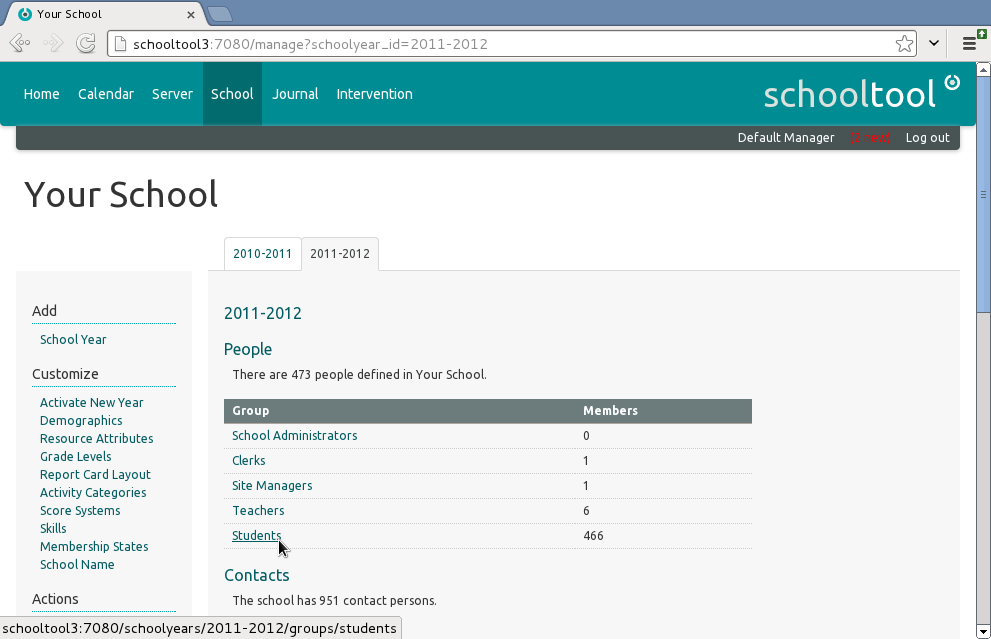
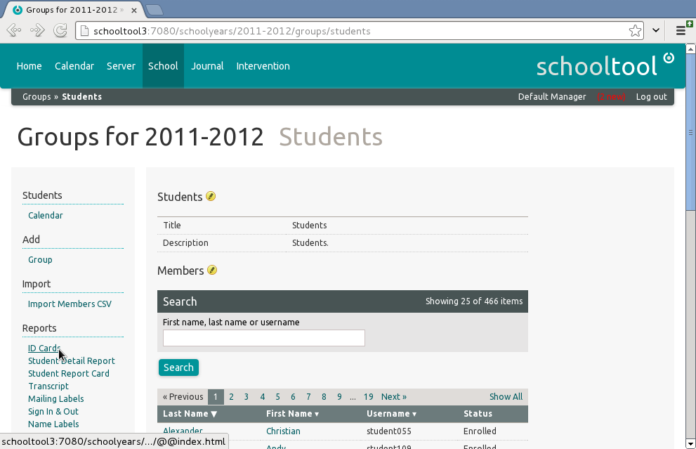
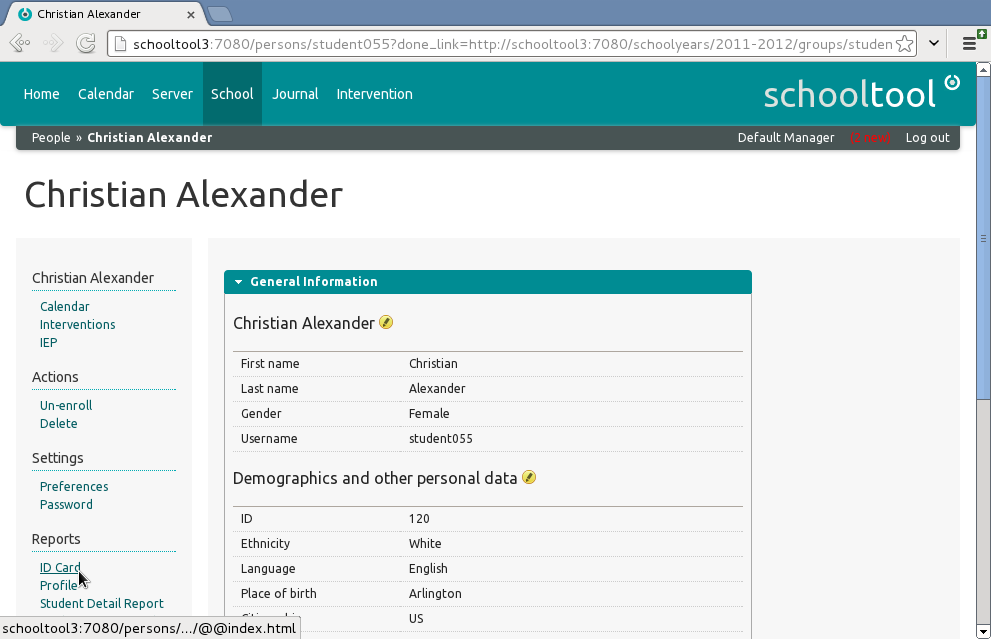
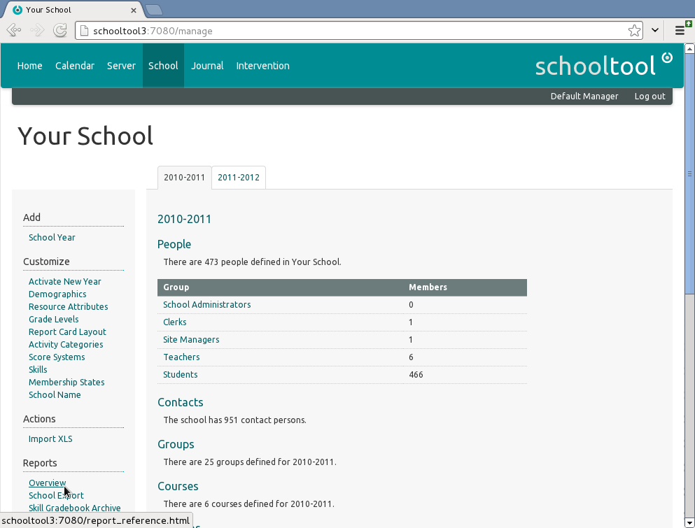
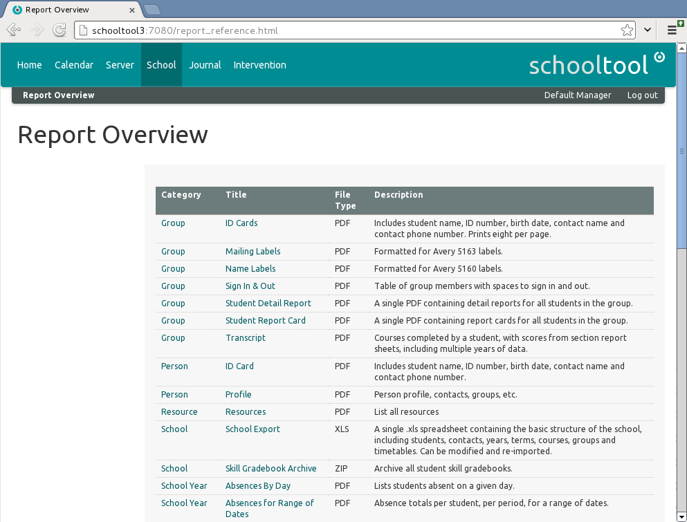

Using Reports¶
Understanding Reports¶
In SchoolTool, Reports are processes which usually generate a downloadable file such as a PDF or XLS spreadsheet (the “result”).
Some Reports may return an HTML result, such as a chart on a web page, but this is rare.
Reports are mostly contextual; you go to the Student to generate their report card, rather than vice versa.
For example, to generate ID cards for all Students in a specific School Year, you would navigate to the School tab, select the sub-tab for the desired date range (in this case, 2011-2012), and click on the Students Group (in the People section).

Clicking on ID Cards (under Reports in the left-hand sidebar) will generate a PDF returning ID cards for all the Students in the chosen School Year.

To generate an ID card for a specific Student, clicking on their name in the list, then clicking on the ID Card link (under Reports in the left-hand sidebar) will limit the scope of the Report to an individual Student.

Report Overview¶
The Report Overview tells you what reports can be run on your system. This list is updated when reports are added or removed from your system by updates or new packages.
Navigate to the Report Overview by clicking the School tab and then selecting Reports: Overview in the left sidebar.

The Report Overview displays a table listing the Category, Title, File Type and Description of all Reports on the system.

The Category indicates the scope of the Report, which may be a range of people (an individual Person or a Group, a Student, a Section, or the entire School), a span of time (Term or School Year), or a Resource report.
The Category indicates where you can find each report. Reports are mostly contextual. For example, to print the report card for a student, you navigate to the student, then select the report card under Reports. In some cases, you also have to navigate to a specific component. For example, to generate a Journal Attendance Export, you must navigate to the section’s journal.
The File Type indicates the type of file returned as a Report result, which may be a printable PDF, an XLS spreadsheet, or a ZIP archive.
Some reports can be run over individual people, groups or sections.
Adding Custom Reports¶
Reports are added through packages. It’s possible for a developer to design and add custom reports for your organization, but this is outside the scope of this page.
Report Sheets and Report Cards are customizable by School Administrators and Clerks through the SchoolTool user interface.
Generating Reports¶
School Administrators and Clerks should have permissions to generate Reports for any Students in the system.
Teachers should have permission to run any reports directly relevant to their sections.
Example of report input dialog
Background processing
Downloading Reports¶
Where you can find reports online
Also in /blobs in file system